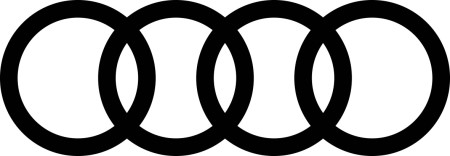
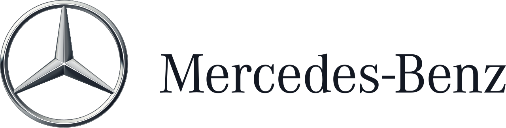
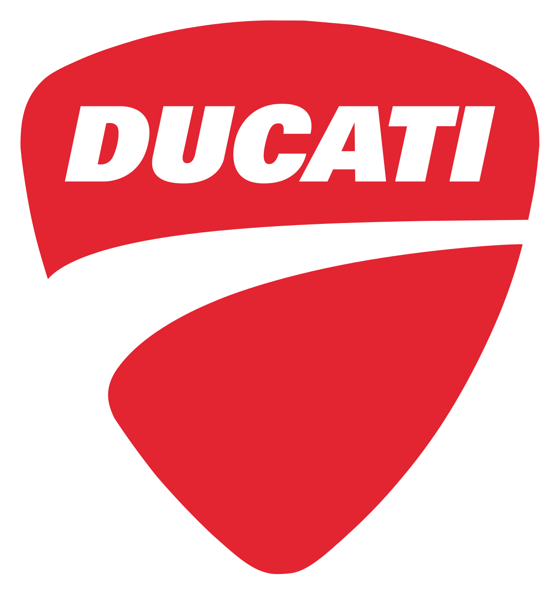

홈 > 브랜드 매거진 > 아우디
아우디
아우디(Audi)는 독일 잉골슈타트에 본사를 둔 폭스바겐 그룹 산하 프리미엄 자동차 제조사이다.
산업 분야 모빌리티 · 공개 등급 편집 검수 · 브랜드 평가 4.6 ★


한눈에 보는 브랜드
아우디(Audi)는 독일 잉골슈타트에 본사를 둔 폭스바겐그룹 산하 프리미엄 자동차 브랜드다. 1909년 엔지니어 아우구스트 호르히가 설립하고 1910년 아우디 상호를 갖춘 회사가 뿌리이며, 1932년 네 회사가 아우토우니온으로 결합하면서 네 개의 맞물린 링 엠블럼이 탄생했다.
2024년 전 세계에 약 167만 대를 인도하고 매출 645억 유로 규모를 기록한 글로벌 고급차 제조사다.
브랜드 관점
메르세데스-벤츠, BMW와 함께 독일 프리미엄 삼강으로 묶이지만, 아우디의 차별점은 1980년 콰트로(quattro) 상시 사륜구동으로 쌓은 기술 이미지와 '기술을 통한 진보(Vorsprung durch Technik)' 철학이다. e-트론 라인업으로 전동화를 앞세웠으나, 2024년 인도량이 11.8% 줄어든 약 167만 대에 그치고 독일에서 2029년까지 7,500여 명 감원을 발표하며 전기차 전환 속도와 수익성 사이에서 전략을 재조정 중이다.
될너 CEO는 내연기관 모델 존속 가능성까지 열어 두며 유연한 노선으로 선회했다. 한국에서도 2024년 판매가 큰 폭으로 줄어 수입차 상위권에서 밀렸다가 다수의 신차 공세로 회복을 노린다.
시작과 성장
창업자는 독일 엔지니어 아우구스트 호르히다. 그는 자신이 세운 호르히 사를 떠난 뒤 1909년 새 자동차 회사를 세웠으나, 호르히 상호를 쓸 수 없어 '듣다'라는 뜻의 독일어 호르히를 라틴어로 옮긴 '아우디(Audi)'를 1910년 사명으로 채택했다.
1932년 6월, 대공황 속에서 아우디·데카베(DKW)·호르히·반더러 네 회사가 아우토우니온으로 합병했고, 이 결합을 상징해 네 개의 맞물린 링이 엠블럼이 되었다. 호르히 본인은 합병 후 신설사 감독이사회에 참여해 기술 자문을 이어갔다.
이후 1960년대 폭스바겐이 아우토우니온을 인수하면서 오늘의 폭스바겐그룹 체제로 편입됐다.
브랜드 아이덴티티
아우디의 정체성은 네 개의 맞물린 링과 '기술을 통한 진보'라는 신조에 응축된다. 1932년 네 창업사를 상징한 이 링은 1980년대 프리미엄 시장 진출과 함께 은빛 입체 마크로 다듬어졌고, 2016년 평면형으로 단순화됐다.
1971년 도입된 'Vorsprung durch Technik' 슬로건은 혁신과 정교한 엔지니어링을 약속하는 브랜드 보이스로 작동한다. 진보적 기술과 절제된 디자인을 중시하는 도심형 고소득 소비자를 겨냥하며, 차갑고 정밀한 톤으로 소통한다.
제품과 서비스
제품군은 세단·왜건의 A 시리즈(A4·A6 등), SUV의 Q 시리즈(Q5·Q7 등), 순수 전기차 e-트론(Q6 e-트론·A6 e-트론 등), 고성능 RS·S 라인으로 구성된다. 가격대는 엔트리 세단·SUV의 수천만 원대부터 고성능 RS와 대형 전기 SUV의 억대까지 폭넓다.
판매는 공식 수입원과 전국 전시장·서비스센터 네트워크를 통한 딜러 유통 방식을 따른다.
현재 상태
본사는 독일 바이에른주 잉골슈타트에 있으며, 모회사는 폭스바겐그룹이다. 최고경영자(CEO)는 게르노트 될너(Gernot Döllner)다.
2024년 전 세계 인도량은 약 167만 대로 전년 대비 11.8% 감소했고, 그중 순수 전기차는 16만여 대였다. 같은 해 아우디그룹 매출은 645억 유로, 영업이익은 39억 유로 규모였다.
한국 시장 판매량은 2024년 약 9천 대 수준이었다.
타임라인
BI/CI 변천사
함께 읽을 브랜드
BMW는 이동수단을 만드는 회사를 넘어, 주행 감각과 조형 언어를 함께 설계하는 디자인 브랜드다. BMW의 강점은 성능 수치만으로 설명되지 않는다. 운전자가 차를 보...

모빌리티 · 자료 기반메르세데스-벤츠메르세데스-벤츠(Mercedes-Benz)는 독일 슈투트가르트에 본사를 둔 프리미엄 자동차 브랜드이다.

모빌리티 · 편집 검수두카티두카티(Ducati)는 이탈리아 볼로냐에 본사를 둔 고성능 오토바이 제조 브랜드이다.
 모빌리티 · 편집 검수볼보
모빌리티 · 편집 검수볼보볼보(Volvo)는 1927년 스웨덴 예테보리에서 출발한 자동차 브랜드로, 승용차(볼보 자동차)와 상용차(볼보 그룹)로 분리돼 있다.
 모빌리티 · 자료 기반제네시스
모빌리티 · 자료 기반제네시스제네시스(Genesis)는 현대자동차그룹이 2015년 출범시킨 럭셔리 자동차 브랜드다.
모빌리티 · 자료 기반현대모비스현대모비스(Hyundai Mobis)는 현대자동차그룹의 자동차 부품 기업으로, 1977년 설립돼 2000년 현 사명이 됐다.
 모빌리티 · 자료 기반HL만도
모빌리티 · 자료 기반HL만도HL만도(HL Mando)는 HL그룹 계열의 대한민국 자동차 부품(섀시·제동·조향) 제조 기업이다.
모빌리티 · 자료 기반캐딜락캐딜락는 자동차 산업 분야의 브랜드입니다.